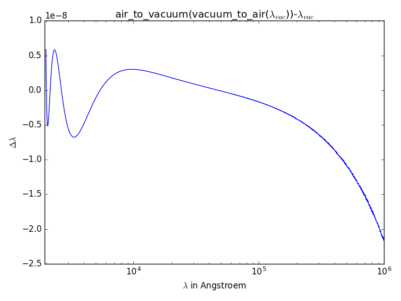

Selected topics on Physics (f311.physics)¶
Introduction¶
Selected Physics-related resources:
- Photometry (AB/Vega/Standard)
- Spectrum-to-RGB (red, green, blue) color conversion
- Air-to-vacuum (& vice versa) wavelenght conversion
- Calculation of Hönl-London factors according to formulas in Kovács’ 1969 [1]
Examples¶
Air-to-vacuum (& vice versa) wavelength conversion¶
The following code reproduces the figure shown in VALD3 Wiki (http://www.astro.uu.se/valdwiki/Air-to-vacuum%20conversion) (“comparison of the Morton and the inverse transformation by NP between 2000 Å and 100000 Å.”)
import matplotlib.pyplot as plt
import numpy as np
import f311.physics as ph
λvac = 10**np.linspace(np.log10(2000), np.log10(1000000), 2000)
y = ph.air_to_vacuum(ph.vacuum_to_air(λvac))-λvac
plt.semilogx(λvac, y)
plt.xlabel("$\lambda$ in Angstroem")
plt.ylabel("$\Delta\lambda$")
plt.xlim([λvac[0]-50, λvac[-1]])
plt.title("air_to_vacuum(vacuum_to_air($\lambda_{vac}$))-$\lambda_{vac}$")
plt.tight_layout()
plt.show()

Calculate the magnitude of a spectrum¶
The following example compares flux-to-magnitude conversion of the Vega spectrum for different magnitude systems.
import f311.physics as ph
import tabulate
systems = ["stdflux", "ab", "vega"]
bands = "UBVRIJHK"
sp = ph.get_vega_spectrum()
rows = [([band]+[ph.calc_mag(sp, band, system) for system in systems]) for band in bands]
print(tabulate.tabulate(rows, ["band"]+systems))
This code results in the following table:
band stdflux ab vega
------ ----------- ---------- ------
U 0.00572505 0.761594 -0
B 0.0696287 -0.10383 -0
V 0.0218067 0.0191189 -0
R 0.0359559 0.214645 -0
I 0.0661095 0.449825 -0
J -0.0150993 0.874666 -0
H 0.0315447 1.34805 -0
K 0.0246046 1.85948 -0
Calculate Hönl-London factors for doublets¶
In the following examples, a normalization factor is applied to the Hönl-London factors (HLF), such that all HLFs for a given J must add up to 1.0:
from f311 import physics as ph
S, DELTAK = 0.5, 0 # spin, delta Kronecker
J = 1.5
factor = 2/((2*J+1)*(2*S+1)*(2-DELTAK))
normalized = [f(J)*factor for f in ph.doublet.get_honllondon_formulas(0, 1).values()]
print(sum(normalized))
This code should output:
1.0
The formulas for the HLFs were taken from the book Istvan Kovacs, “Rotational Structure in the spectra of diatomic molecules. American Elsevier, 1969